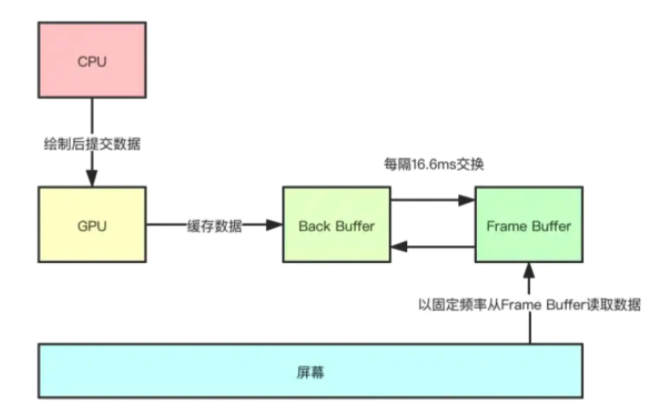

android 屏幕渲染
渲染机制
CPU负责计算数据，把计算好数据交给GPU,
GPU会对图形数据进行渲染，渲染好后放到buffer里存起来
display负责将buffer里的数据显示在屏幕
简单的说就是CPU/GPU准备好数据，存入buffer，
display每隔一段时间去buffer里取数据，然后显示出来。
display读取的频率是固定的，比如每个16ms读一次，但是CPU/GPU写数据是完全无规律的
底层每16ms会发送一次VSync，更新界面
CPU：执行应用层的measure、layout、draw等操作，绘制完成后将数据提交给GPU
GPU：进一步处理数据，并将数据缓存起来
屏幕：由一个个像素点组成，以固定的频率（16.6ms，即1秒60帧）从缓冲区中取出数据来填充像素点
因为display取buffer数据渲染的频率固定，而GPU往buffer写数据却是不固定的，难免存在场景：GPU还在往buffer写数据，但此时display正要显示，此时就会显示异常。
为避免这种现象，引入一种新方案：双缓存机制
双缓存机制
android的渲染机制中引入双缓存机制。新增一个缓存 back buffer, back buffer 会定时与 frame buffer交换数据

当你的应用正在往Back Buffer中填充数据时，系统会将Back Buffer锁定。
如果到了GPU交换两个Buffer的时间点，你的应用还在往Back Buffer中填充数据，GPU会发现Back Buffer被锁定了，它会放弃这次交换。
这样做的后果就是手机屏幕仍然显示原先的图像，这就是我们常常说的丢帧，
所以为了避免丢帧的发生，我们就要尽量减少布局层级，减少不必要的View的invalidate调用，减少大量对象的创建（GC也会占用CPU时间）等等
QA
Q1：Android 每隔 16.6 ms 刷新一次屏幕到底指的是什么意思？是指每隔 16.6ms 调用 onDraw() 绘制一次么？
Q2：如果界面一直保持没变的话，那么还会每隔 16.6ms 刷新一次屏幕么？
答：我们常说的 Android 每隔 16.6 ms 刷新一次屏幕其实是指底层会以这个固定频率来切换每一帧的画面，而这个每一帧的画面数据就是我们 app 在接收到屏幕刷新信号之后去执行遍历绘制 View 树工作所计算出来的屏幕数据。而 app 并不是每隔 16.6ms 的屏幕刷新信号都可以接收到，只有当 app 向底层注册监听下一个屏幕刷新信号之后，才能接收到下一个屏幕刷新信号到来的通知。而只有当某个 View 发起了刷新请求时，app 才会去向底层注册监听下一个屏幕刷新信号。
也就是说，只有当界面有刷新的需要时，我们 app 才会在下一个屏幕刷新信号来时，遍历绘制 View 树来重新计算屏幕数据。如果界面没有刷新的需要，一直保持不变时，我们 app 就不会去接收每隔 16.6ms 的屏幕刷新信号事件了，但底层仍然会以这个固定频率来切换每一帧的画面，只是后面这些帧的画面都是相同的而已。
Q3：界面的显示其实就是一个 Activity 的 View 树里所有的 View 都进行测量、布局、绘制操作之后的结果呈现，那么如果这部分工作都完成后，屏幕会马上就刷新么？
答：我们 app 只负责计算屏幕数据而已，接收到屏幕刷新信号就去计算，计算完毕就计算完毕了。至于屏幕的刷新，这些是由底层以固定的频率来切换屏幕每一帧的画面。所以即使屏幕数据都计算完毕，屏幕会不会马上刷新就取决于底层是否到了要切换下一帧画面的时机了。
Q4：网上都说避免丢帧的方法之一是保证每次绘制界面的操作要在 16.6ms 内完成，但如果这个 16.6ms 是一个固定的频率的话，请求绘制的操作在代码里被调用的时机是不确定的啊，那么如果某次用户点击屏幕导致的界面刷新操作是在某一个 16.6ms 帧快结束的时候，那么即使这次绘制操作小于 16.6 ms，按道理不也会造成丢帧么？这又该如何理解？
之所以提了这个问题，是因为之前是以为如果某个 View 发起了刷新请求，比如调用了 invalidte()，那么它的重绘工作就马上开始执行了，所以以前在看网上那些介绍屏幕刷新机制的博客时，经常看见下面这张图：
那个时候就是不大理解，为什么每一次 CPU 计算的工作都刚刚好是在每一个信号到来的那个瞬间开始的呢？毕竟代码里发起刷新屏幕的操作是动态的，不可能每次都刚刚好那么巧。
梳理完屏幕刷新机制后就清楚了，代码里调用了某个 View 发起的刷新请求，这个重绘工作并不会马上就开始，而是需要等到下一个屏幕刷新信号来的时候才开始，所以现在回过头来看这些图就清楚多了。
Q5：大伙都清楚，主线程耗时的操作会导致丢帧，但是耗时的操作为什么会导致丢帧？它是如何导致丢帧发生的？
答：造成丢帧大体上有两类原因，一是遍历绘制 View 树计算屏幕数据的时间超过了 16.6ms；二是，主线程一直在处理其他耗时的消息，导致遍历绘制 View 树的工作迟迟不能开始，从而超过了 16.6 ms 底层切换下一帧画面的时机。
第一个原因就是我们写的布局有问题了，需要进行优化了。而第二个原因则是我们常说的避免在主线程中做耗时的任务。
针对第二个原因，系统已经引入了同步屏障消息的机制，尽可能的保证遍历绘制 View 树的工作能够及时进行，但仍没办法完全避免，所以我们还是得尽可能避免主线程耗时工作。
其实第二个原因，可以拿出来细讲的，比如有这种情况， message 不怎么耗时，但数量太多，这同样可能会造成丢帧。如果有使用一些图片框架的，它内部下载图片都是开线程去下载，但当下载完成后需要把图片加载到绑定的 view 上，这个工作就是发了一个 message 切到主线程来做，如果一个界面这种 view 特别多的话，队列里就会有非常多的 message，虽然每个都 message 并不怎么耗时，但经不起量多啊。